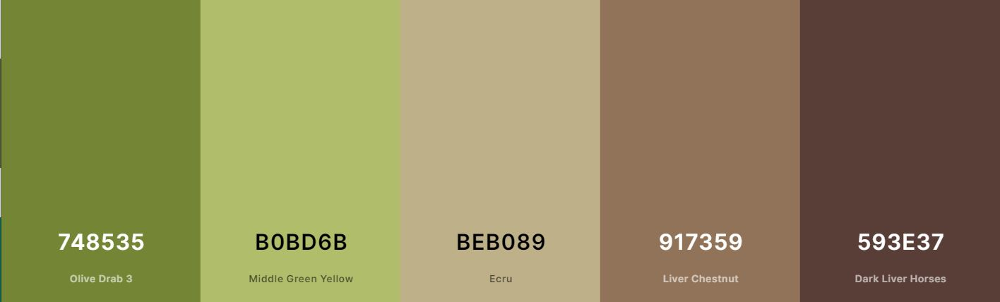

Color Schema
Typography
Heading Font: Josefin Sans
Paragraph Font: Lato
Examples
| Item | Font | Size | Colors and Background | Sample |
|---|---|---|---|---|
| Site Header | Josefin Sans | 30px | #BEB089 & #593E37 | Sample |
| Navigation Bar | Lato | 25px | #593E37 & #B0BD6B | Sample |
| Heading 2 | Josefin Sans | 25px | #593E37 & #white | Sample |
| Heading 3 | Josefin Sans | 23px | #593E37 & #white | Sample |
| Heading 4 | Josefin Sans | 20px | #593E37 & #white | Sample |
| Lists | Lato | 18px | #593E37 & #white | Sample |